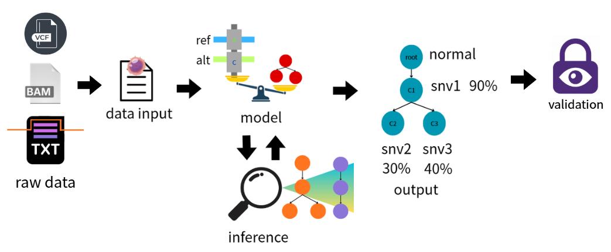
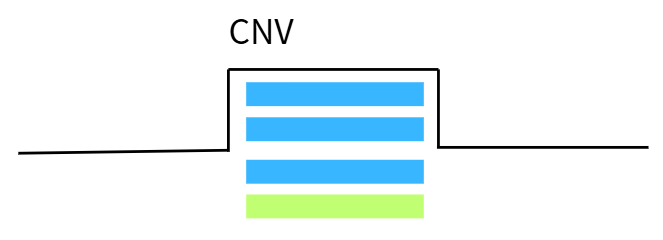
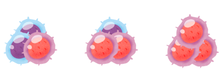
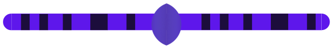
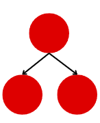
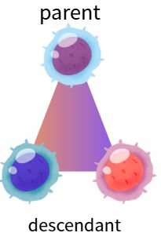
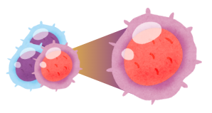
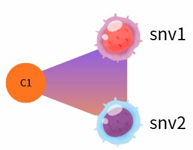

上游來源
BAM
REF/ALT read counts
module-format · module_format.mdBAM、VCF、ASCAT 是上游資料來源，data input 先建立 canonical SNV-level table。

REF/ALT read counts
SNV identity
purity、copy number、CN/LOH context
data input 把 BAM、VCF、ASCAT 的資訊整理成一列一個 SNV 的基本資料，供 model 讀取。
提供 REF/ALT read counts。
mutation_id、chrom、pos、ref、alt
rho_ASCAT、site-level major_cn/minor_cn/total_cn

SNV 所在位置的 CN context。

固定的 sample-level tumor purity：rho_ASCAT。
Identity、Read counts、Purity 與 Copy number 共同組成供 model 讀取的基本資料。
| 類別 | 欄位 | 意義 |
|---|---|---|
| Identity | mutation_id、chrom、pos、ref、alt | 哪一顆 SNV |
| Read counts | ref_reads、alt_reads、total_reads | 觀察到的 REF/ALT read counts；total_reads = ref_reads + alt_reads |
| Purity | rho_ASCAT | 固定的 sample-level tumor purity；目前主分析為 0.99 |
| Copy number | major_cn、minor_cn、total_cn | SNV 所在位置的 CN context；total_cn = major_cn + minor_cn |

Model 讀取 canonical SNV table，把 read counts、purity、copy number，連同候選 tree 的 clone fraction 與模型內部建立的 multiplicity，計算成候選 tree 的分數。Inference 探索不同候選樹並根據分數更新參數。

Root → Clone A → Clone B；Root → Clone C。

祖先 clone 原則上會被後代 clone 繼承。
還沒看 sequencing data 之前，哪些演化樹演化狀態比較合理。
假設這棵樹是真的，觀察到的 sequencing data 的機率有多高？
看到真實 sequencing data 後，模型猜測出來的腫瘤演化樹可信度有多高。
以下四項是文件列出的 model 輸出參數；圖片保留原始 asset 的完整構圖。
T哪些 clone 是 parent／descendant？
ηᵥ每個 clone 自己獨有、且不包含 descendants 的 tumor-cell fraction 是多少？
φ / CCF某 clone 加上 descendants 的累積比例是多少？
z一顆 SNV 比較支持哪個 clone？


本文件只保留模組邊界與資料流；其他內容保留，待後續更新。